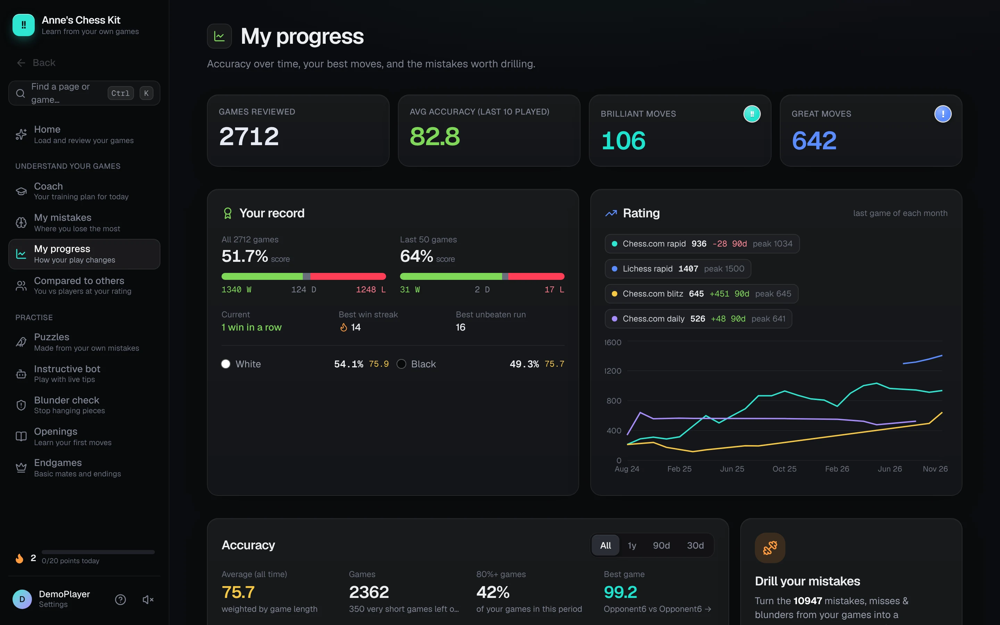
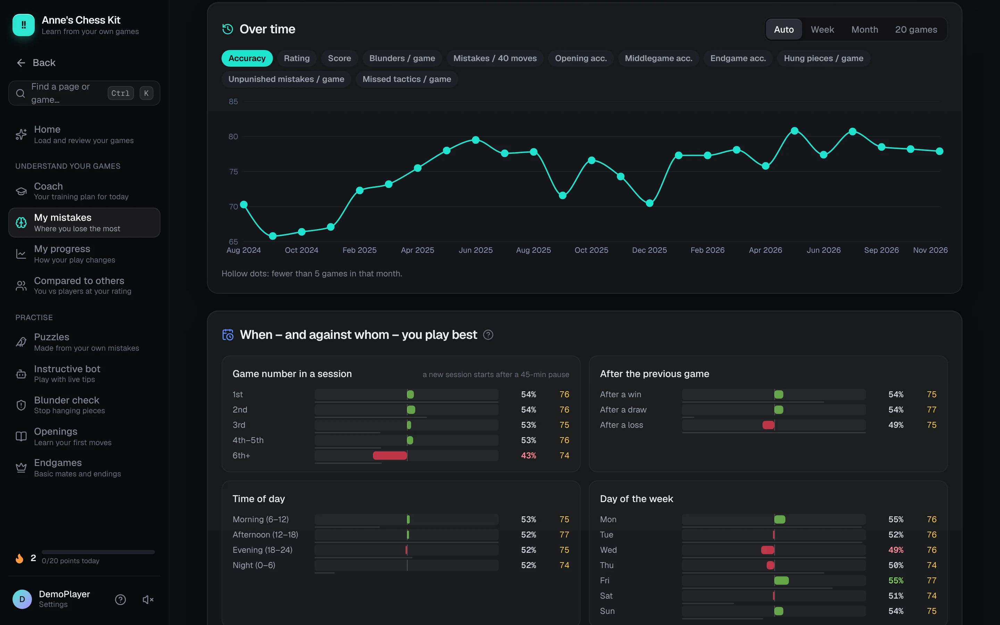
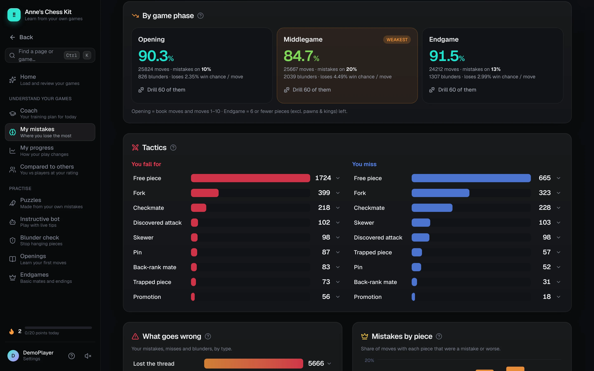
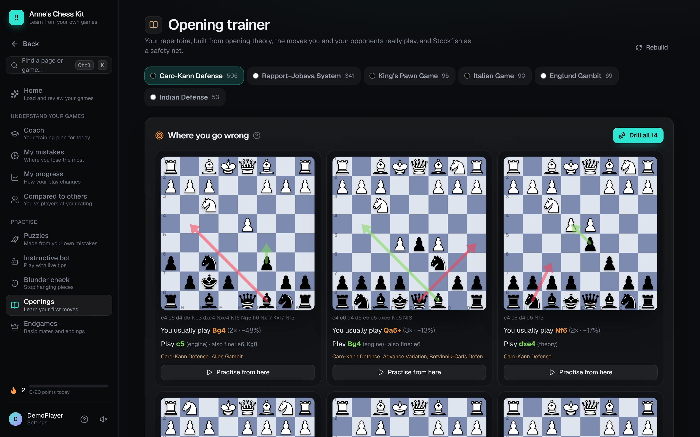

v1.0.0 · free and open source (GPL-3.0) · Windows, macOS, Linux
Chess game review and training that runs on your own computer.
Import your games from Chess.com, Lichess or a PGN file. Stockfish rates every move, explains what went wrong and shows the better line. Your own mistakes then become training material: puzzle sets solved by calculation, a blunder-check trainer, an opening trainer, endgame drills and a human-like opponent that coaches you while you play.
No account, no usage limits, nothing uploaded. Games and reviews stay on your machine.
Windows 10/11: installer or portable zip, engines included. macOS and Linux: run from source.

Features
Review
- Move ratings from Brilliant to Blunder, accuracy per side, evaluation bar and clickable evaluation graph.
- An explanation for every move: the threat it created or allowed, the punishing reply, what it cost and what was better.
- Retry your mistakes, play through the best line, explore your own variations with live engine lines.
- Annotated PGN export and re-analysis at a higher depth.
Your games
- Imports your full Chess.com or Lichess history once; later syncs fetch only new games.
- Batch analysis in the background, using as many CPU threads as you allow.
- Progress: record, rating history, accuracy trends, personal records.
- Insights and Coach: where you lose points by phase, piece, clock, opening and tactic, and the habits behind it, each with a drill of those positions.
Training
- Opening trainer built from opening theory, your own games and Stockfish.
- Blunder check: decide whether a move is safe, on positions from your own games.
- Woodpecker puzzle cycles from your mistakes or the Lichess puzzle database, with a calculation mode: enter the whole line before a move is played.
- Endgames: basic mates, king and pawn endings, Lucena, Philidor and more, with explanations and an overlay of the squares each side controls.
- Instructive bot: a Maia-based opponent at the strength you choose that rates your moves as you play, practises gambits with you and, in Nightmare mode, steers toward your weak openings and tactics.








How moves are rated
Every move is measured in expected points (win probability) lost compared with Stockfish's best move. The win-probability curve depends on rating: at 1000 a +2 position is far from won, so the curve is flatter for lower ratings. The played move is searched from the same position and depth as the best move, so a game gets the same ratings every time it is analysed. Accuracy uses the Lichess formula.
| Rating | Rule |
|---|---|
| Brilliant | A best or excellent move that really sacrifices material: in the engine line you stay at least two pawns down for more than one move, or the piece cannot be taken without loss. Never a king move, and not when already winning. Re-checked at depth 22+. |
| Great | The only good move: the next-best move is clearly worse, and it is not an obvious recapture. |
| Best | The engine's top move, or one that loses less than 0.5 %. |
| Excellent / Good | Loses less than 2 % / 5 %, scaled by the curve. |
| Inaccuracy | Loses less than 10 %. |
| Mistake | Loses less than 20 %. |
| Blunder | Loses 20 % or more. Allowing a forced mate is always a blunder, even in a lost position. |
| Miss | Letting a forced mate slip, or failing to punish the opponent's mistake without leaving yourself worse off than before it. A move that makes your own position worse, or hangs material, stays a mistake or blunder. |
| Book | The position is in the Lichess opening book. |
| Forced | The only legal move. |
Source: backend/app/classify.py
Install
Windows
- From the latest release, download
AnnesChessKit-X.Y.Z-setup.exe(installer, no administrator rights needed) orAnnesChessKit-X.Y.Z-windows.zip(portable: unpack anywhere). - Start it from the Start menu, or with
AnnesChessKit.exein the unpacked folder. Python, Stockfish, Lc0 and the Maia networks are included. - Windows SmartScreen may warn because the program isn't code-signed: choose More info, then Run anyway.
- Enter your Chess.com and/or Lichess username in Settings.
macOS, Linux, or from source
# Node.js 20.19+ or 22+ to build the UI once
git clone https://github.com/peptopekto/annes-chess-kit.git
cd annes-chess-kit/frontend
npm ci && npm run build
cd ..
# put Stockfish into engine/
./annes-chess-kit.sh # Windows: AnnesChessKit.batNeeds Python 3.11+ and Stockfish 16 or newer. run.py options: --port, --browser, --no-open, --keep-running.
Optional components
| Component | Location | Enables |
|---|---|---|
| Lc0 + Maia networks | engine/lc0/, engine/maia/ | Nightmare, human-like defenders in Endgames |
| Syzygy tablebases (3–5 pieces) | engine/syzygy/ | Exact play in the Endgames trainer |
| Lichess puzzle database | path in Settings | Woodpecker sets from Lichess puzzles |
Performance
The app runs one single-threaded engine per hardware thread, each working through consecutive positions so its hash table carries over. That is several times faster than one multi-threaded engine at the same depth: roughly 40 positions per second at depth 16 on an 8-core desktop CPU. Analysis can run to a fixed depth (reproducible) or for a fixed time per move.
Data and privacy
The server listens on 127.0.0.1 only. The program goes online only to fetch your games from the
public Chess.com and Lichess APIs. Reviews, imported games, settings and training records live in the
userdata/ folder next to the program, or wherever CHESSKIT_USERDATA points.
Built with
Python, FastAPI and python-chess on the backend; React, Vite and chessground for the interface; Stockfish, Lc0 and Maia for analysis and play; the Lichess opening book for opening names. Full list, with licences and where to find each component's source, in THIRD_PARTY_NOTICES.md.